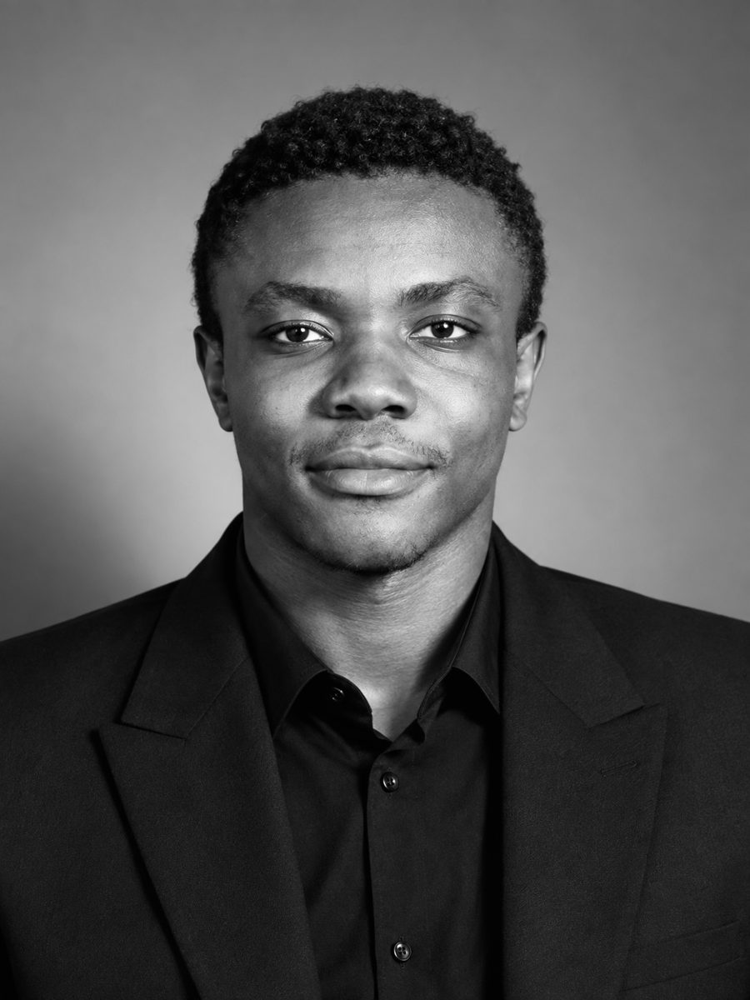

Data engineer & DSI à Ouagadougou. Je fais tourner l’ERP d’un groupe multi-filiales et je construis des pipelines de données, de l’infrastructure jusqu’aux indicateurs métier.

Diplômé en génie logiciel (2025), je suis aujourd’hui DSI d’Aïobi et de BBS Holding. Je pilote leur ERPNext multi-filiales de bout en bout et je m’occupe moi-même de la géolocalisation, de la logistique et du reporting comptable par filiale.
Mon terrain de jeu préféré : le data engineering. Lakehouse, Spark, Airflow, et un homelab pour tout tester.
Aussi curieux de : DBA · QA · cloud · sysadmin · OSINT / GEOINT
ERP multi-filiales en production
sociétés sous ma responsabilité
Administration complète de l’ERP du groupe : applications maison (provisioning, gestion de flotte), formats d’impression, rapports, tableau de bord comptable par filiale. Bac à sable cloné de la prod, sauvegarde et diff avant chaque écriture.
Le socle data commun à plusieurs chantiers :
Rétro-analyse des fichiers natifs SAGE, puis extraction des données via le pilote ODBC.
Mon homelab sur un HP Z2. Supervision, accès distant et reverse proxy en place ; en cours : PostgreSQL central, puis Nextcloud, Jellyfin, Navidrome, Vaultwarden…
Plateforme de recommandation nutritionnelle. Mon rôle : architecture, base de données et backend Django.
Une équipe d’agents de développement autonomes sur OpenHarness, pilotée depuis Discord. Stack opérationnelle.
Cartographie de bases de facturation (eau, électricité, paiement mobile).
Collecte de commentaires Facebook et LinkedIn.
Workflow n8n qui détecte les offres dans des groupes.
Archives : progiciel commercial, gestion de parc auto (Django) · outils Excel/VBA → GitHub ↗
ERPNext multi-filiales, data, géolocalisation et logistique, reporting comptable.
Les bases des mainframes IBM Z.
[École à compléter]
Orientation data / infrastructure, en préparation.